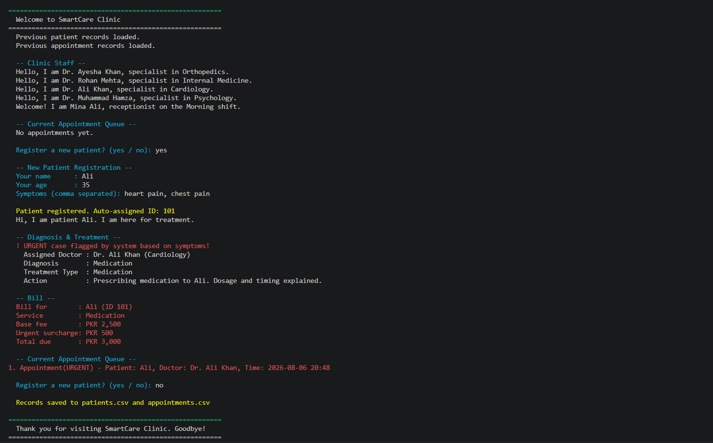
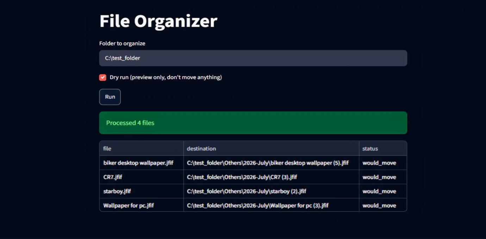
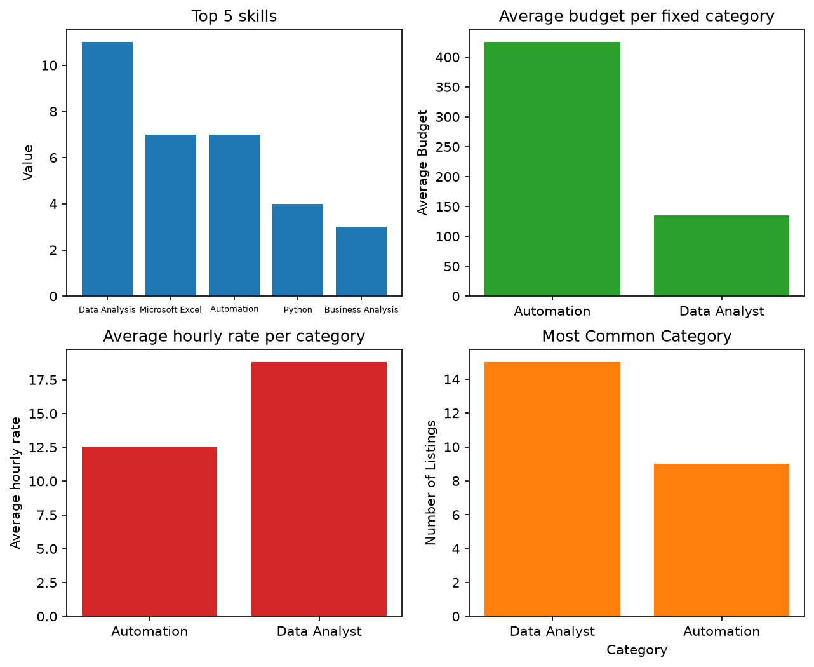

Rania Rashid
I ship small, working tools —
then make them better.
I build practical Python tools, explore data carefully, and keep moving toward a deeper career in AI engineering.
Built to be explained,
not just to work.
I'm a BS Artificial Intelligence student at Ghazi University, DG Khan, interested in practical Python development, automation, and data-focused problem solving. I enjoy building small tools that are understandable, useful, and reliable.
My work so far has centered on object-oriented programming, command-line tools, and data analysis with Python. I'm still learning and improving, and I prefer to present work that I can stand behind with clarity and honesty.
Things I've built & studied.
OOP capstone

SmartCare-Clinic
A terminal-based clinic appointment and diagnosis simulation. Auto-generates patient IDs, routes symptoms to the right specialty, flags urgent cases, assigns doctors, and bills with an urgency surcharge — colored terminal output for readability.

what i learned
Inheritance (Patient, Doctor, Receptionist from Person), polymorphism across introduce() and apply(), encapsulation via private attributes, abstract base classes, and operator overloading for sorting and printing appointments.
First shipped project

File Organizer Automation
A command-line utility that organizes files into folders by type and date while avoiding risky moves when a file is still in use. Handles real filesystem edge cases gracefully.

what i learned
Learned that a script which crashes on a locked file isn't done yet. pathlib and shutil over manual string path handling. Also built a Streamlit UI so non-terminal users can run it.
Data analysis

FreelanceLens
A small data analysis project exploring manually collected freelance listings to identify common skills, categories, and budget patterns — fixed-price and hourly kept separate.

what i learned
Small sample sizes lie if you let them: categories with only 2–3 listings get their average reported alongside the sample size. Budget ranges were recorded at their minimum value — a known bias I documented rather than hid.
Tools I reach for.
Credentials I've earned.
Google IT Automation with Python
Google · Coursera
Computer Operator
TEVTA
Let's talk.
Open to internships, collaborative work, and opportunities to build practical Python tools that solve real problems.